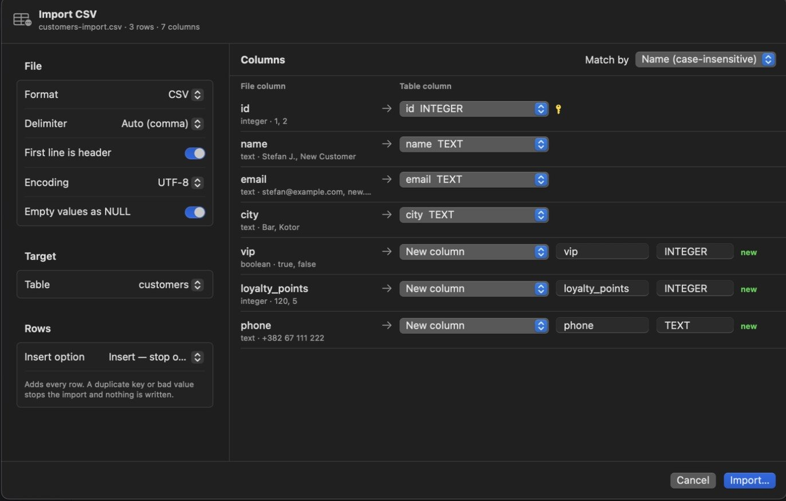

Import data
Bring rows in from CSV or JSON: add them, update the ones that already exist, or create a new table. If the file doesn't fit the table, Tabulo tells you exactly what it would change before anything runs.
Tutorial: update customers from a CSV
This file has two existing customers (ids 1 and 2) and one new one, plus three columns the table doesn't have yet.
id,name,email,city,vip,loyalty_points,phone
1,Stefan J.,stefan@example.com,Bar,true,120,+382 67 111 222
,New Customer,new.customer@example.com,Kotor,false,5,
2,,ana@example.com,Cetinje,false,40,- Start the import
Select the
customerstable and choose File ▸ Import ▸ From CSV… (⇧⌘I), or right-click the table ▸ Import Data…. Pick the file. - Check how the file is read
On the left: the delimiter (detected automatically), First line is header, the encoding, and Empty values as NULL. The header shows how many rows and columns Tabulo found.
- Map the columns
Each file column shows its detected type and sample values, with the table column it goes to. Match by pairs them by name, by name ignoring case, or by position. Change any row to another column, to New column (with a name and type), or to skip it.

- Choose what happens to existing rows
Under Rows ▸ Insert option:
Option What it does Insert — stop on error Adds every row. A duplicate key or bad value stops the import and nothing is written. Update on duplicate key Rows whose primary key (or any unique column) already exists are updated. The rest are added. Skip rows with an existing key Adds new rows and leaves existing ones alone. Empty the table, then insert Deletes all rows first. For this file, choose Update on duplicate key.
- Read the structure review
Click Import…. Because the file doesn't match the table, a review opens before anything is written:
- Columns that will be added, each with a type you can edit and the reason, for example "boolean values, e.g. 'true'".
- Columns that will change, with the reason. Here
namemust allow NULL because one row has no name. Other examples:integer → numericbecause "1 value doesn't fit integer, e.g. '2.5' (row 2)", or a longervarchar. - Notes, such as columns missing from the file and how SQLite applies the change.
- Statements that will run first: the exact DDL.

- Decide
Untick anything you don't want. Then click Apply Changes & Import, or Import Without Changing Structure to skip the DDL and leave unmatched columns out.
- Check the result
Tabulo reports how many rows were new, updated and skipped. On PostgreSQL and SQLite the structure changes and the rows run in one transaction, so an error undoes both. MySQL commits column changes on their own, so it applies them first and then writes the rows in one transaction: a failed row undoes the rows, not the column changes.
Import into a new table
In Target, choose a new table (or collection, or index) instead of an existing one. Tabulo suggests a type for each column from the data, and you can change any of them.
JSON files
File ▸ Import ▸ From JSON… reads an array of objects, newline-delimited JSON, {"data": […]}, Elasticsearch search hits, and MongoDB extended JSON.
SQL dumps
File ▸ Import ▸ From SQL Dump… (PostgreSQL, MySQL and SQLite) runs a .sql file statement by statement. Dumps from mysqldump work as they are, including their /*!40101 … */ lines.